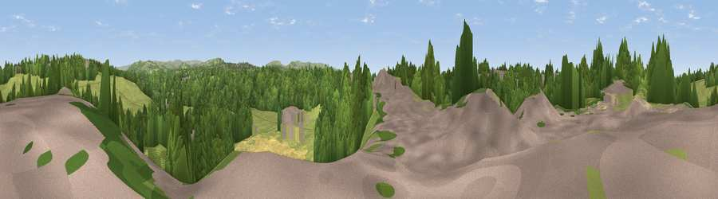

Viewpoint near Hazel Grove
#35350 in England · top 78% of its area beats it · near Hazel GroveWhere it is
The exact computed spot (SJ 92825 89325). Click the marker for map links.
The view, rendered

A 360° render of this exact spot computed from the terrain model, tree cover and land cover — summer colours, afternoon light, calibrated against photographs of famous viewpoints. Real trees, hedges and buildings will differ in detail.
The panorama
Grey silhouette: terrain skyline in each direction (720 bearings, Earth curvature and refraction included). Dashed green: skyline with trees (+15 m) and buildings (+8 m) as obstacles. Blue strip: how far the ground is visible on each bearing.
Where the view opens
Wedge length = distance to the farthest visible ground on that bearing (vegetation-aware). Rings at 10, 25 and 50 km.
What fills the view
47% woodland · 32% grassland · 12% built-up · 9% cropland
Angular shares of the visible panorama (visual magnitude), not map area. Landscape diversity 0.52 (0–1 Shannon).
Key numbers
More beautiful places nearby
The staircase of upgrades: each row has a higher view potential than everything closer. Driving times are estimates from straight-line distance, calibrated against real road routing — check an actual route before setting out.
| Place | Direction | Drive | Score |
|---|---|---|---|
| Viewpoint near Marple | NE · 1 km | ~3 min | 38.6 |
| Viewpoint near Stockport | NW · 2 km | ~5 min | 41.8 |
| Viewpoint near Haughton Green | NNE · 2 km | ~6 min | 57.1 |
| Viewpoint near Haughton Green | NNE · 3 km | ~7 min | 64.0 |
| Viewpoint near Compstall | NE · 3 km | ~8 min | 72.5 |
| Harrop Edge | NE · 9 km | ~18 min | 74.6 |
| Wild Bank | NE · 10 km | ~20 min | 76.2 |
| Viewpoint near Carrbrook | NNE · 12 km | ~23 min | 77.1 |
53.40070, -2.10938 · source: screening · position refined by local search. Computed location — check access rights before visiting.